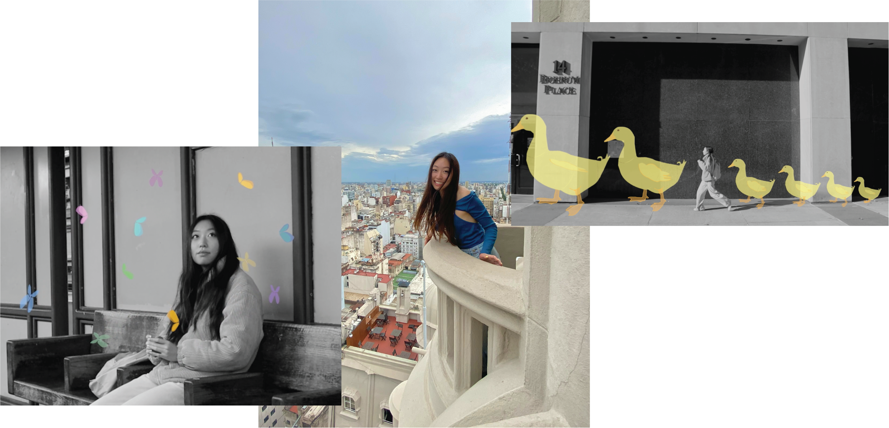

Hannah Jo is a multidisciplinary designer studying Integrated Design and Media at New York University. Through her studies, Hannah explores the intersection of human-centered artistic and technological interaction, seeking to design accessible experiences that make everyday life a little bit brighter.
Hannah has collaborated with global art collectives to produce exhibitions that delve into the beauties and perils of innovation by intersecting media and emerging technologies. Nothing excites her more than the collaborative production process, from ideation to iteration to delivery, where she investigates how design can be circular, vibrant, and thoughtful.
In her free time, Hannah can be found sporting her latest funky thrift find, sipping on boba, and deeply analyzing board games with her loved ones.

Hannah has collaborated with global art collectives to produce exhibitions that delve into the beauties and perils of innovation by intersecting media and emerging technologies. Nothing excites her more than the collaborative production process, from ideation to iteration to delivery, where she investigates how design can be circular, vibrant, and thoughtful.
In her free time, Hannah can be found sporting her latest funky thrift find, sipping on boba, and deeply analyzing board games with her loved ones.